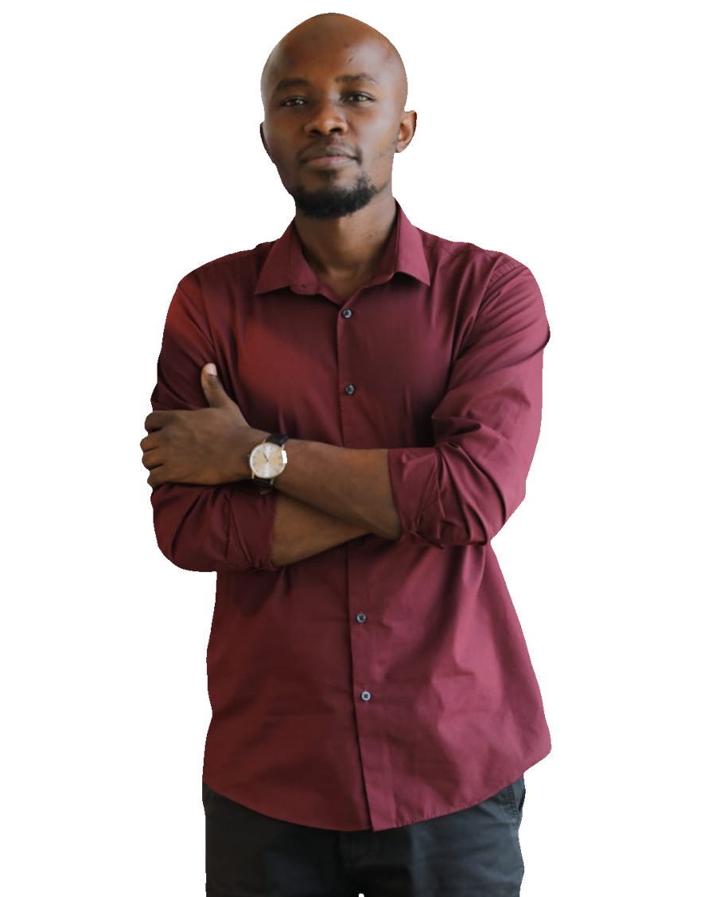

Bondo,
Siaya
Systems developer, trainer and producer
John Wesley AmedaJohn Wesley AmedaJohn Wesley AmedaJohn Wesley Ameda
I build software and teach people how to build it.
Ledgers, indexes, marketplaces, mobile apps and the instruments that test them. Then I teach the building of it, along with the design and the marketing around it.
A fee ledger that reconciles itself. A room of people writing their first working program. Both are the same job.
The work runs wider than one kind of product. A fee ledger that reconciles M-Pesa payments for a school of 217 students. A national index that ranks brands on a weighted model rather than an average of stars. A marketplace the size of a neighbourhood, a crop diagnosis app that works with the radio off, an Android instrument built to measure whether a product is worth making at all.
The other half of the week is a classroom, and it is not onboarding. I head training at the Siaya Community Digital Hub, where 1,576 people have come through, and the programmes teach people to build: web development, data analysis, cyber security, design and video. Children writing their first Scratch block, school leavers finishing with something they built themselves.